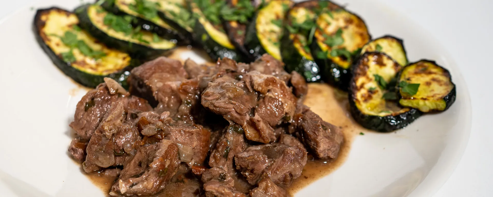

Second Course Sardinian Goat
The use of goat's milk butter makes the meat even more tender and delicious!
Ingredients
- Goat 1.8 kg
- Vinegar 200 ml
- Goat butter 60 g
- Salt, pepper 10 g
- Juniper grains 10 g
- Rosemary 12 g
- Sage 12 g
- Bay leaves 10 g
- Olive oil 50 ml

Instructions
- Wash the goat with water and vinegar. Dry, brush with oil, wrap in film, and marinate at least 10 hours.
- Chop and mix juniper, rosemary, sage, and bay. Add salt and pepper. Make cuts in the meat and fill with aromatic mixture.
- Place goat on greased baking tray, spread butter over surface, and bake at 200°C for 1 hour.
- Midway, open oven and wet goat with its own gravy to keep meat tender.
- Remove from oven, let cool 5 minutes, cut into pieces, and serve.